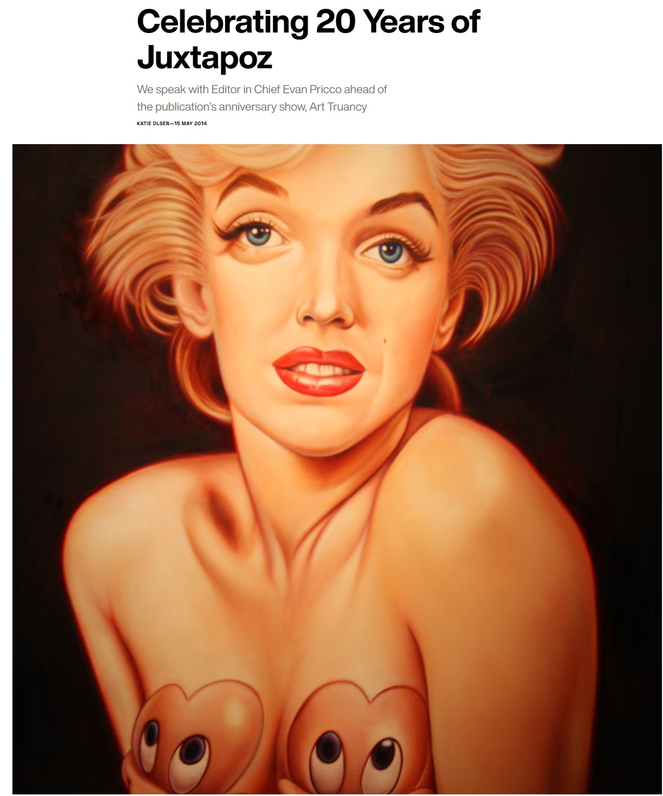
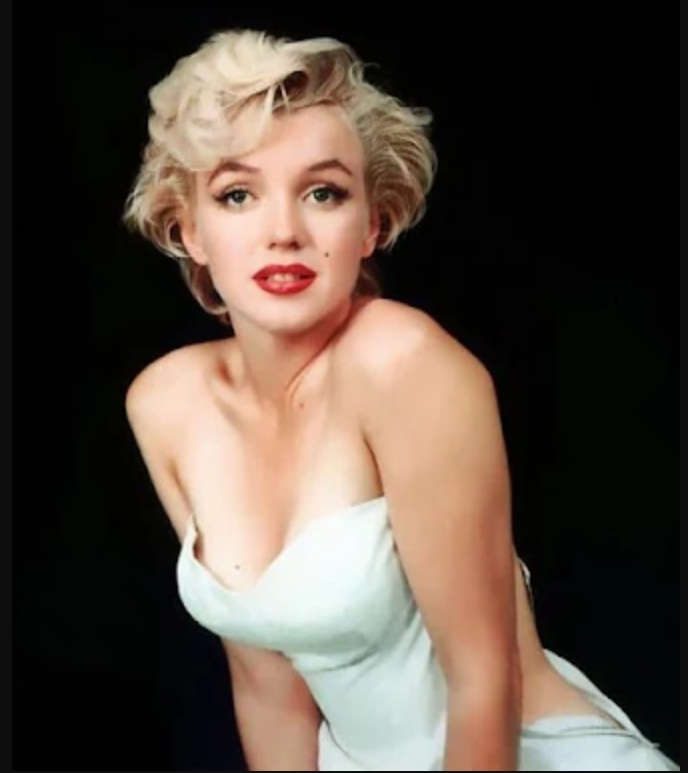

Exhibitions
Big Picture Pop, Opera Gallery, New York, New York, US, November 29–late December 2007.
Art Truancy, Jonathan LeVine Gallery, New York, New York, US, May 15–June 14, 2014.
Notes
This work appears in the lead image of Katie Olsen, “Celebrating 20 Years of Juxtapoz,” Cool Hunting, May 15, 2014, available here, accessed April 17, 2026.
It also appears in the lead image of Justin Page, “‘Art Truancy’, An Art Show Celebrating 20 Years of ‘Juxtapoz Magazine’ at Jonathan LeVine Gallery in New York City,” Laughing Squid, May 13, 2014, available here, accessed April 17, 2026.
This work is reproduced in the exhibition catalogue for Big Picture Pop.
In the Big Picture Pop exhibition catalogue, this work was erroneously reported as 68 × 52 inches.
The composition draws on a photographic image of Marilyn Monroe; a representative source image is available here.
It also references Mickey Mouse, created by Walt Disney and Ub Iwerks; a representative image is available here.
Ancillary Documentation



